BOWEN ZHENG, State Key Lab of CAD&CG, Zhejiang University, China
KE CHEN, State Key Lab of CAD&CG, Zhejiang University, China
YUXIN YAO, Department of Engineering, University of Cambridge, United Kingdom
ZIJIAO ZENG, Department of Efficiency Product, Tencent Games, China
XINWEI JIANG, Department of Efficiency Product, Tencent Games, China
HE WANG, UCL Centre for Artificial Intelligence, Department of Computer Science, University College London, United Kingdom
JOAN LASENBY, Department of Engineering, University of Cambridge, United Kingdom
XIAOGANG JIN ∗ , State Key Lab of CAD&CG, Zhejiang University, China and ZJU-Tencent Game and Intelligent Graphics Innovation Technology Joint Lab, China

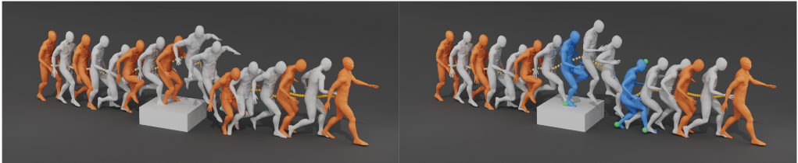
Fig. 1. Motion generation (left) and editing (right) results using our keyframe generation method. Given dense control signals on the root joint (yellow spheres), flexible sparse spatial constraints on specific joints, and action label, our method generates keyframes (orange) at user-specified frames, and completes the motion sequence with a motion infilling method (white). The right panel highlights motion editing, where specific keyframes (blue) are regenerated with sparse spatial constraints (green spheres), effectively resolving the foot-penetration issue with the box observed in the left panel. Transition frames are adaptively updated to ensure smooth and coherent motion adjustments, seamlessly integrating the edits into the overall sequence.
Keyframing has long been the cornerstone of standard character animation pipelines, offering precise control over detailed postures and dynamics.
∗ Corresponding author.
Authors' Contact Information: Bowen Zheng, State Key Lab of CAD&CG, Zhejiang University, Hangzhou, China, bwzheng@zju.edu.cn; Ke Chen, State Key Lab of CAD&CG, Zhejiang University, Hangzhou, China, tian_chen@zju.edu.cn; Yuxin Yao, Department of Engineering, University of Cambridge, Cambridge, United Kingdom, yy561@cam.ac.uk; Zijiao Zeng, Department of Efficiency Product, Tencent Games, Shenzhen, China, zijiaozeng@tencent.com; Xinwei Jiang, Department of Efficiency Product, Tencent Games, Shanghai, China, wesleyjiang@tencent.com; He Wang, UCL Centre for Artificial Intelligence, Department of Computer Science, University College London, London, United Kingdom, he_wang@ucl.ac.uk; Joan Lasenby, Department of Engineering, University of Cambridge, Cambridge, United Kingdom, jl221@cam.ac.uk; Xiaogang Jin, State Key Lab of CAD&CG, Zhejiang University, Hangzhou, China and ZJU-Tencent Game and Intelligent Graphics Innovation Technology Joint Lab, Hangzhou, China, jin@cad.zju.edu.cn.
Permission to make digital or hard copies of all or part of this work for personal or classroom use is granted without fee provided that copies are not made or distributed for profit or commercial advantage and that copies bear this notice and the full citation on the first page. Copyrights for components of this work owned by others than the author(s) must be honored. Abstracting with credit is permitted. To copy otherwise, or republish, to post on servers or to redistribute to lists, requires prior specific permission and/or a fee. Request permissions from permissions@acm.org.
SIGGRAPH Conference Papers '25, Vancouver, BC, Canada
© 2025 Copyright held by the owner/author(s). Publication rights licensed to ACM. ACM ISBN 979-8-4007-1540-2/25/08
https://doi.org/10.1145/3721238.3730664
However, this approach is labor-intensive, necessitating significant manual effort. Automating this process while balancing the trade-off between minimizing manual input and maintaining full motion control has therefore been a central research challenge. In this work, we introduce AutoKeyframe, a novel framework that simultaneously accepts dense and sparse control signals for motion generation by generating keyframes directly. Dense signals govern the overall motion trajectory, while sparse signals define critical key postures at specific timings. This approach substantially reduces manual input requirements while preserving precise control over motion. The generated keyframes can be easily edited to serve as detailed control signals. AutoKeyframe operates by automatically generating keyframes from dense root positions, which can be determined through arc-length parameterization of the trajectory curve. This process is powered by an autoregressive diffusion model, which facilitates keyframe generation and incorporates a skeletonbased gradient guidance technique for sparse spatial constraints and frame editing. Extensive experiments demonstrate the efficacy of AutoKeyframe, achieving high-quality motion synthesis with precise and intuitive control.
CCS Concepts: · Computing methodologies → Motion processing.
Additional Key Words and Phrases: Keyframe Generation, Motion Synthesis, Motion Editing
ACM Reference Format:
Bowen Zheng, Ke Chen, Yuxin Yao, Zijiao Zeng, Xinwei Jiang, He Wang, Joan Lasenby, and Xiaogang Jin. 2025. AutoKeyframe: Autoregressive Keyframe
SIGGRAPH Conference Papers '25, August 10-14, 2025, Vancouver, BC, Canada.
Generation for Human Motion Synthesis and Editing. In Special Interest Group on Computer Graphics and Interactive Techniques Conference Conference Papers (SIGGRAPH Conference Papers '25), August 10-14, 2025, Vancouver, BC, Canada. ACM, New York, NY, USA, 12 pages. https://doi.org/10.1145/ 3721238.3730664
1 INTRODUCTION
Creating character animations is a labor-intensive yet indispensable process in the animation and gaming industries. In standard workflows, animators manually design keyframes, which act as critical control signals defining the desired motion. These keyframes are subsequently refined and interpolated using motion synthesis techniques to produce complete animations. To ensure that the final output aligns with the artistic vision, animators often need to undertake iterative manual adjustments. Therefore, improving the efficiency of this workflow has been a focal point of research, with efforts ranging from generating transition motions between keyframes to reducing the reliance on manual keyframing. This paper focuses on the latter, emphasizing the importance of providing flexible and efficient control mechanisms to ensure practical applicability in real-world scenarios.
Early approaches to motion synthesis often rely on complex motion planning and constraint-based techniques to generate transitions between motion frames or segments from motion databases [Arikan and Forsyth 2002; Kovar et al. 2002; Lee et al. 2002] or sparse keyframes [Chai and Hodgins 2007; Wang et al. 2015]. While these methods significantly reduced the time required for manual keyframing, they were limited by fixed or rigid control options, offering little flexibility to animators. More recent advances [Dai et al. 2024; Wan et al. 2024; Xie et al. 2024] have introduced finegrained spatial control. However, achieving precise control that balances fine-grained and coarse-grained control signals remains a significant challenge. Furthermore, current methods often lack the support for local motion modifications, restricting animators' ability to adapt generated motions flexibly to complex, dynamic scenarios. These limitations underscore the need for a more versatile approach to motion generation, capable of handling general control signals while supporting precise, localized edits to meet the demands of realistic animation workflows.
Building upon these limitations, we draw inspiration from the workflows of professional animators to propose a novel approach that generates keyframes directly controlled by action labels, 3D root trajectories and flexible sparse spatial constraints on specific joints. Consistent with previous works [Karunratanakul et al. 2023; Xie et al. 2024], we define the root trajectory as dense root positions over time. This control paradigm enables a unique combination of global planning and precise local adjustments, significantly reducing the required manual input-particularly for long-termmotions involving complex environmental interactions. By focusing on keyframe generation, our framework also facilitates precise local edits through adjustments to individual keyframes, refining local motions between adjacent frames. Furthermore, this approach seamlessly integrates with established motion in-betweening methods [Qin et al. 2022; Tang et al. 2022], yielding higher-quality motion generation. To the best of our knowledge, the direct generation of keyframes as a central focus has been largely overlooked in prior research, despite its potential to transform animation workflows.
While recent approaches [Hong et al. 2024; Pi et al. 2023] have made initial attempts, we argue that there are still two key but unsolved challenges which affect the effectiveness of keyframe generation. The first is the diversity of keyframe timing. The distribution of keyframes in time throughout the motion sequence is highly correlated with the tempo of the motions. For example, smooth and low-dynamic motions like walking require only sparse keyframes, whereas complex and dynamic motions, like fighting or dancing, necessitate dense keyframes to accurately capture rapid movements. The variety of timing patterns greatly complicates the task for neural networks, making it more difficult to learn the interrelationships between keyframes. The second factor is keyframe quality. Keyframes encapsulate critical moments of an entire motion sequence using a limited number of poses, serving as a sparse control signal for the entire motion. Consequently, generating highquality keyframes is essential, as the overall motion heavily relies on them-low-quality keyframes can result in motion artifacts like irregularities in movement. Furthermore, this emphasis on quality extends beyond motion plausibility to include expressiveness; without it, the motion may appear 'averaged' across the dataset.
We start by training an Autoregressive Keyframe Diffusion Model, which generates a new keyframe at a user-specified frame, conditioned on the previous keyframe, the action label, and various control signals extracted from the root trajectory. This autoregressive design mitigates the complexity caused by varying timing patterns, allowing the model to focus solely on learning the relationships between two frames. To facilitate motion editing and fine-grained control, we introduce a skeleton-based gradient guidance method that propagates the gradient to specific joints according to the diffusion timestep and skeleton structure, enabling keyframe generation with flexible spatial constraints. Moreover, to further improve the quality of generated keyframes, we construct a keyframe dataset by extracting keyframes from LaFAN1 [Harvey et al. 2020] with a reinforcement-learning-based keyframe extraction method.
We perform extensive experiments, including user studies, to validate the effectiveness of our approach. By integrating our method with various motion in-betweening techniques, we demonstrate its capability to achieve high-quality motion synthesis and editing. Our contributions can be summarized as:
· An autoregressive keyframe diffusion model that generates high-quality keyframes from 3D root trajectories.
· A skeleton-based gradient guidance method that enables spatial constraints on any joint with high fidelity, which further facilitates flexible control and editing options.
· A keyframe dataset, extracted from LaFAN1, that empirically enhances the quality of keyframe generation.
2 RELATEDWORK
2.1 Human Motion Generation
Human motion generation focuses on the task of generating full motion sequences under certain conditions. Recently, with the rapid advancement of generative models, conditional human motion generation has improved significantly. Existing works incorporated various generative models [Guo et al. 2020; Zhang et al. 2023d], where diffusion models [Tevet et al. 2023; Zhang et al. 2024] are now receiving the most attention. The conditions for generation also vary widely, encompassing action categories [Guo et al. 2020; Petrovich et al. 2021], text [Chen et al. 2023; Guo et al. 2022; Jiang et al. 2023; Petrovich et al. 2022; Tevet et al. 2023; Zhang et al. 2023d, 2024, 2023a], and even 3D scenes [Cen et al. 2024; Pi et al. 2023; Wang et al. 2024; Yi et al. 2025]. Despite these multimodal conditions providing ordinary users with simple methods for quick motion generation, they are often not suitable for industrial production, where animators typically seek accurate sparse motion control.
To introduce precise spatial control in diffusion-based motion generation, a straightforward approach is to incorporate diffusion inpainting techniques [Shafir et al. 2024; Tevet et al. 2023]. Although effective for dense control signals, this type of approach faces limitations when the control signals are sparse. One feasible solution to this issue is to adopt a two-stage generation scheme by first generating a coarse result and then refining it [Karunratanakul et al. 2023; Wan et al. 2024]. To achieve better flexibility for both temporal density and control joints, recent methods [Dai et al. 2024; Xie et al. 2024] introduced ControlNet [Zhang et al. 2023c] into motion diffusion and incorporated analytical spatial guidance. Although these works have made significant progress on controllability, they do not support post-generation modification, which is an essential need of animators to fulfill their creation vision.
2.2 Motion Editing
Motion editing focuses on modifying a motion sequence under specific constraints while preserving the original source motion. Early methods [Gleicher 1997; Lee and Shin 1999] require dense spacetime constraints on multiple body joints. Along with the advancement of motion generation, motion editing based on deep learning has drawn much attention recently. Although motion style transferring works [Aberman et al. 2020; Song et al. 2024] exist, they do not support specific modification of motion content. More recently, under the setting of text-driven motion generation, motion editing can be achieved with the help of Large Language Models (LLM), either by refining the text prompt for generation [Zhang et al. 2023b] or executing predefined motion editing operators on keyframes [Goel et al. 2024]. A dedicated dataset [Athanasiou et al. 2024] is also constructed to further support language-based motion editing.
However, these methods rely on natural language instructions or reference motion, which do not support precise control over joint positions and can introduce ambiguity, leading to inefficient editing processes in industrial applications.
2.3 Keyframe-based Motion Synthesis
Recent keyframe-based motion synthesis can be categorized into two different branches. One of them is motion in-betweening [Cohan et al. 2024; Harvey et al. 2020; Qin et al. 2022; Starke et al. 2023; Studer et al. 2024; Tang et al. 2022], which focuses on generating short motion transitions between given keyframes. These methods can synthesize motions of impressive quality, which reach the standard for production use [Agrawal et al. 2024]. Although motion in-betweening greatly reduced the demand of keyframes compared to traditional interpolation, manual keyframe crafting is inevitable. Moreover, the deterministic models commonly used by motion in-betweening methods limit the diversity of resulting motions.
Another branch is to directly generate keyframes for motion synthesis, which has been barely explored. A typical approach employs a hierarchical framework to generate motions for human-object interaction [Pi et al. 2023]. This method produces milestones-analogous to keyframes-that encapsulate local poses and transition points, serving as inputs for diffusion-based motion generation. Additionally, long-termmotion in-betweening [Hong et al. 2024] can also be achieved by adaptively selecting keyframes from coarse transition results and refining the transition based on those keyframes.
While these works leverage keyframes to assist in motion generation, they overlook the importance of keyframe timing and quality. For example, Pi et al. [2023] generate milestones with a constant interval, neglecting the complex keyframe timing pattern in practice. Hong et al. [2024] acquire keyframes from coarse sequences, leaving their quality unguaranteed. Addressing these issues is crucial for enhancing the overall fidelity and effectiveness of keyframe-based motion synthesis in practical applications.
3 METHODS
Given a complete root trajectory T ∈ R𝐿×3 of length 𝐿, action label a and sparse spatial constraints 𝑝 as control input, our method generates a sequence of motion keyframes X = {x 0, x 1, ..., x𝑁 }, with each frame x𝑖 located on the 𝑘𝑖 -th point on the trajectory, which is specified by users. This keyframe sequence can be further completed into high-quality motion and serves as a solid foundation for artists to edit. To accomplish that, we train an autoregressive keyframe diffusion model (AKDM), which takes as input the previous keyframe x𝑖 -1 , action label a, and various control signals C𝑖 derived from the trajectory, and learns the conditional distribution of the future keyframe x𝑖 (Sec 3.1). To facilitate accurate control and precise editing of the motion, we propose a skeleton-based gradient guidance approach to enable the keyframe generation to adhere to flexible spatial constraints (Sec 3.2). To further improve the generation quality, we construct a motion keyframe dataset using an adaptive keyframe selection method based on deep reinforcement learning (Sec 3.3).
3.1 Autoregressive Keyframe Diffusion Model
We first introduce an autoregressive motion keyframe diffusion model (AKDM), which generates a new keyframe conditioned on the last keyframe, action label and various control signals extracted from the trajectory. The generating process can be formalized as:

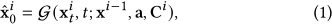
where 𝑡 is the diffusion step, x𝑖𝑡 is the noisy sample at 𝑡-th step, and C𝑖 = {𝑐𝑖 𝑖𝑛𝑡 , 𝑐𝑖𝑝𝑑 , 𝑐𝑖𝑣, 𝑐𝑖ℎ } is the control signals derived from the root trajectory. We will explain these control signals later in this section.
Like existing works [Chen et al. 2024; Tevet et al. 2023], we use a transformer-based network as the backbone of our denoiser, the structure of which is illustrated in Fig. 2(b). Instead of generating motion sequences 𝑋 ∈ R𝐿×𝐹 , where 𝐿 is the length of the motion sequence and 𝐹 is the feature dimension of one pose, we take advantage of generating one single frame at a time by inputting noisy keyframe samples in the form of joints sequences x = [ 𝑗 1, 𝑗 2, 𝑗 3, ..., 𝑗 𝐽 ]. Here, x ∈ R𝐽 ×𝑄 , 𝐽 is the number of joints in the skeleton, and 𝑄 is the dimension of each joint's rotation feature. We utilize local and global rotations for non-root joints and root joints separately, adapting the 6D rotation representation (i.e., 𝑄 = 6)[Zhou et al. 2019]. This approach enables our model to effectively learn the spatial attention of human poses. Meanwhile, the process of generating the next frame from the previous one also drives our model to learn the temporal dynamics of human motion.
![Fig. 2. An overview of our generating method. (a) The generating pipeline of our AKDM. AKDM generates one keyframe x𝑖 at a time conditioned on the previous keyframe x𝑖-1 , action label a, and control signals C𝑖 extracted from the trajectory. (b) The structure of the denoiser of our AKDM. (c) The proposed skeleton-based gradient guidance. We incorporate flexible constraints by shifting the predicted mean of the sample at each diffusing step. When applying the guidance, we mask out the gradient on partial joints based on the timesteps and skeleton structure.](assets/0054-picture.png)
Following [Chen et al. 2024], we employ Separate Condition Tokenization (SCT), embedding each input condition with separate linear layers into individual tokens. We concatenate all the condition tokens, including the previous keyframe x𝑖-1 , the action label a, and multiple control signals C𝑖 , with the noisy sample x𝑖𝑡 . The concatenated tokens are then fed into a transformer encoder as a sequence to leverage the attention mechanism.
Control Signals. Besides the previous keyframe x𝑖-1 and the action label a, we derive various control signals C𝑖 from the 3D root trajectory T : the frame interval 𝑐𝑖 𝑖𝑛𝑡 , the position difference 𝑐𝑝𝑑 , the velocity 𝑐𝑣 , and the height 𝑐ℎ. To provide a clearer explanation, we define the corresponding frame index for keyframe x𝑖 as 𝑘𝑖 and let T (𝑘) represent the root position in the 𝑘-th frame of the trajectory. Thus, we can represent all control signals as follows:

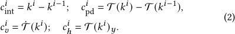
Here, T (𝑘𝑖 )𝑦 is the 𝑦-axis component of T (𝑘𝑖 ). The first two control signals, frame interval 𝑐𝑖 𝑖𝑛𝑡 and position difference 𝑐𝑖𝑝𝑑 , encapsulate the interrelationships between consecutive frames. The latter two signals are crucial for ensuring the quality of the generated keyframes. Velocity 𝑐𝑖𝑣 reflects the style of keyframe pose, while providing absolute height information 𝑐𝑖ℎ helps the model avoid generating pose with ground penetration.
Losses. Following common practice in the motion diffusion field, our AKDM predicts clean samples ˆx𝑖0 instead of noise, enabling the integration of additional geometric loss. Therefore, the diffusion loss can be represented as:

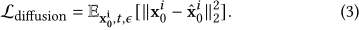
We also apply MSE loss for the global positions of joints:

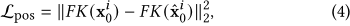
where 𝐹𝐾(·) is the differentiable forward kinematics function that transforms the local rotations of joints to global positions. We enhanced the supervision on the global joint rotations to avoid unrealistic body orientations by further applying a global rotation loss:

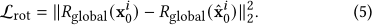
Here, the function 𝑅global (·) computes global rotations of joints from their local rotations, following the skeleton's kinematic chain.
With the aforementioned losses, our training loss is defined as:

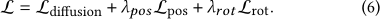
3.2 Flexible Spatial Constraints
In our keyframe-based framework, motion editing can be achieved by modifying and regenerating the unsatisfying keyframes in the results, or generating new keyframes between existing ones for refinement. To achieve greater precision in editing, we propose a skeleton-based gradient guidance method that facilitates keyframe generation to adhere to flexible spatial constraints.

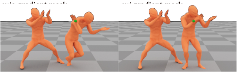
At its core, our diffusion model employs a classifier guidance approach. During each denoising step, we adjust the predicted mean by leveraging the scaled gradient of an L2 distance function 𝐺:

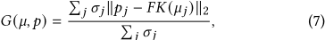
where 𝑝𝑗 is the spatial constraint position of joint 𝑗 and𝜎𝑗 is a binary value indicating whether there is a constraint on joint 𝑗 . However, we observed that directly computing gradients and guiding the entire body at every step can lead to a deterioration in the quality of the generated results. Similar phenomena are also reported in [Xie et al. 2024]. Through thorough investigation, we identified that this issue primarily arises from the conflict between the imposed constraint and the prior established by the previous keyframe. A generated keyframe with a strong prior sometimes fails to incorporate extra spatial constraints when it leads to a pose that is too dissimilar, resulting in unnatural poses. Based on this observation, we suggest applying the gradient guidance to different parts of the predicted mean on different diffusion steps according to the structure of the skeleton. The guiding process can be formalized as:

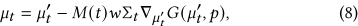
where 𝑤 controls the strength of the guidance, 𝜇 ′ 𝑡 is the original predicted mean, and Σ𝑡 is the variance scheduler of the diffusion process. 𝑀(·) is a binary mask that indicates which part of the mean should be updated. Specifically, in the early stage of the denoising process, we only propagate the gradient to the root joint, helping the pose adjust to an appropriate orientation. Then we gradually propagate the gradient to the torso as the denoising process goes on, and finally apply the gradient to the whole body. The effectiveness of this approach is demonstrated in Fig. 3.
3.3 Dataset Construction
The training data for AKDM should contain the user input control signals and the final motion. While motion data is abundant, the corresponding user input is scarce. Therefore, we do not directly use user input data for training. Note that our model is still evaluated on real user inputs in the user study. It is only during training do we use synthetic user inputs. To construct a synthetic dataset, we extract representative frames in a motion sequence to build an effective keyframe dataset. Existing methods [Mo et al. 2021; Roberts et al. 2018] are not ideal for our purpose because they often select keyframes with high probabilities, retaining many redundant frames. Additionally, these methods typically require manually specifying the number of keyframes. To address this, we propose an adaptive keyframe extraction approach based on motion complexity.
Inspired by [Mo et al. 2021], we adopt a similar deep Q-learningbased method and reconstruct motions with motion in-betweening methods. The keyframe extraction process in our method can be formulated as a Markov decision process (MDP), defined by a tuple M = (S, A, 𝐸, 𝑅, 𝜋) of states, actions, environment, reward function and policy. Here, we define the action set A as the frames that have not been selected before, so an action 𝑎 ∈ A corresponds to choosing a new keyframe. States 𝑠ℎ ∈ S are defined as the composition of the original motion sequence, selected frames, and the reconstructed motion. At each decision step, our policy model 𝜋(𝑎ℎ |𝑠ℎ ) observes the current state and selects a new keyframe 𝑎ℎ ∈ A. Please refer to the supplementary material (Sec 1.2) for the detail of the state representations and policy model. Then, the environment 𝐸(𝑠ℎ+1 |𝑠ℎ , 𝑎ℎ ), consisting of a pre-trained motion inbetweening model [Qin et al. 2022], reconstructs the full motion based on currently selected frames and gives a reconstruction error 𝛿ℎ . The reward for the policy model is determined by the reward function:

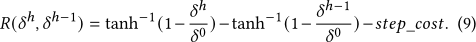
We introduce a step cost in the reward function to incentivize the policy model to complete the selection in as few steps as possible. Starting from an initial state 𝑠 1 , where the first and last frames are selected as keyframes by default, our policy model chooses keyframes iteratively until the reconstruction error 𝛿ℎ falls below a predefined threshold, at which point the selection process is done. We adopt double deep Q-Learning [Hasselt et al. 2016] to train our policy model, whose objective is to maximize long-term rewards.
However, there can be a gap between the keyframe timing patterns selected by our method and those in user input. Learning solely from the extracted keyframes could lead to overfitting. In practice, we train the AKDM by using the extracted keyframes as the current keyframes x𝑖 and randomly sampling previous frames, ranging from 5 to 40 frames before x𝑖 , as x𝑖-1 . This approach empirically improves the quality of generation (see ablation study).
3.4 Inference
Given the input root trajectory, the action label, and the specified keyframe timings, keyframes are generated through our autoregressive scheme. However, generating the first frame of the entire sequence remains a problem. To address this, we employ classifierfree guidance on the previous keyframe. Specifically, we randomly set the previous keyframe x𝑖-1 token to nil with a probability of 0.1 during training. At runtime, the keyframe is sampled with a guidance scale of 𝑠:

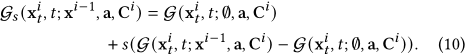

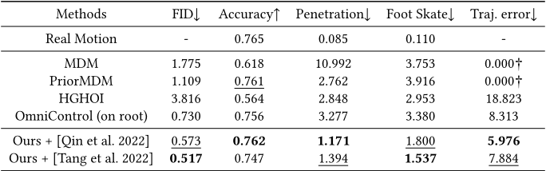
Recognized table text (check against the image)
| Methods | FID↓ | Accuracy↑ | Penetration↓ | Foot Skate↓ | Traj. error↓ |
|---|---|---|---|---|---|
| Real Motion | - | 0.765 | 0.085 | 0.110 | - |
| MDM | 1.775 | 0.618 | 10.992 | 3.753 | 0.000† |
| PriorMDM | 1.109 | 0.761 | 2.762 | 3.916 | 0.000† |
| HGHOI | 3.816 | 0.564 | 2.848 | 2.953 | 18.823 |
| OmniControl (on root) | 0.730 | 0.756 | 3.277 | 3.380 | 8.313 |
| Ours + [Qin et al. 2022] | 0.573 | 0.762 | 1.171 | 1.800 | 5.976 |
| Ours + [Tang et al. 2022] | 0.517 | 0.747 | 1.394 | 1.537 | 7.884 |

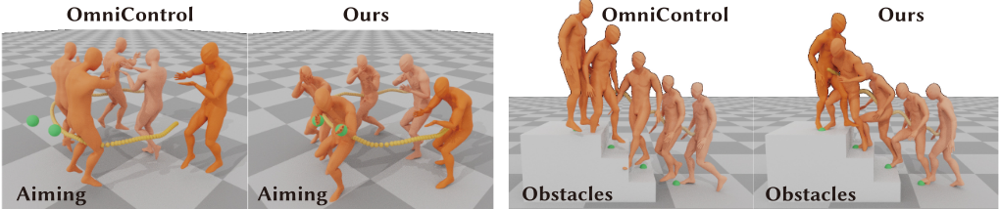
By randomly masking out previous frames during training, we can generate keyframes unconditionally, thus addressing the issue of generating the first frame.
4 EVALUATION
We construct our keyframe dataset from LaFAN1 [Harvey et al. 2020] for both training and evaluation. The LaFAN1 dataset is a motion capture dataset with various action types, containing 496,672 frames performed by 5 subjects. Compared to other commonly used estimation-based action-to-motion datasets [Guo et al. 2020; Ji et al. 2018; Shahroudy et al. 2016], LaFAN1 demonstrates higher quality and greater complexity. Typically, users are expected to specify the timing of keyframes within the root trajectory. However, manually defining keyframe timings is both time-consuming and impractical for large-scale evaluations. To address this, we employ a heuristic method to identify positions where significant movement changes occur for quantitative evaluation. Further details regarding the dataset, the heuristic method, and the training of AKDM can be found in the supplementary materials (Sec 1.1 and 2).
To validate our keyframe generation method, we conduct both quantitative and qualitative evaluations for motion synthesis and editing, along with a user study involving both tasks. We will also showcase examples from the user study for visual comparison.
4.1 Motion Generation
To quantitatively evaluate our method for motion synthesis, we provide a 7-second 3D root trajectory and generate a sequence of keyframes. We then use different motion in-betweening methods [Qin et al. 2022; Tang et al. 2022] to produce full motion sequences. We compare our results with 4 baselines: MDM [Tevet et al. 2023], PriorMDM [Shafir et al. 2024], OmniControl [Xie et al. 2024], and HGHOI [Pi et al. 2023]. We utilize diffusion inpainting to provide trajectory control for MDM. HGHOI was originally designed for human-object interaction generation using a hierarchical scheme similar to ours, in which milestone poses are generated first and subsequently infilled. We made an adaptation for it by setting the environment condition to nil and providing ground truth milestone positions. We report 5 metrics in quantitative evaluation: Frechet Inception Distance (FID), recognition accuracy, penetration, foot skate, and trajectory error. FID is the distance between the feature distribution of generated motion and real motion, which measures the overall quality of the generated motion. We train a transformer action recognition classifier to classify the generated result and calculate the overall recognition accuracy, which indicates the correlation between the motion and its action type. We calculate penetration and foot skate to measure physical plausibility and trajectory error to measure the control accuracy.
As shown in Tab. 1, our method consistently performs the best across all metrics. The superiority in FID and recognition accuracy reflects the overall quality of our results, while the lowest penetration and foot skate highlight the detailed quality achieved.
A visual comparison of motion generation under mixed dense and sparse control signals between our method and OmniControl is presented in Fig. 4. In mixed control scenarios, our method generates high-fidelity results that precisely adhere to both dense (root trajectory) and sparse (joint positions) control signals simultaneously, while OmniControl prioritizes dense control but fails to satisfy sparse positional constraints.
![Fig. 5. Qualitative results of motion editing and examples from the user study. We compare our methods qualitatively with OmniControl for motion editing. In the first row, we control the root trajectory and the head position when the character falls on the ground. Then we generate an extra keyframe and also control the head position to make the character get up earlier. In the second row, we control the root trajectory to make the character perform a jump kick. Then we control its foot joint to kick higher.](assets/0099-picture.png)

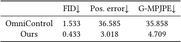
Recognized table text (check against the image)
| FID↓ | Pos. error↓ | G-MPJPE↓ | |
|---|---|---|---|
| OmniControl | 1.533 | 36.585 | 35.858 |
| Ours | 0.433 | 3.018 | 4.709 |
We also apply motion in-betweening to baseline methods for comparison. We found that this post-processing reduces foot skating but negatively impacts the overall quality of these baselines, as they are not specifically designed for keyframe generation, which highlights the importance and value of our method. More details are presented in the supplementary materials (Sec 3.1).
4.2 Motion Editing
The qualitative result of motion editing is showcased in the first row of Fig. 5. For quantitative evaluation of motion editing, we compare our method to OmniControl. Given the same ground truth motion, we input its trajectory into both methods for the first generation and take the result as source motion. Then we randomly sample a frame from the real motion and select the positions of 1 to 4 joints in this frame as the editing control for the regeneration. We calculate the FID between regenerated results and real motion to evaluate the quality of edited results, global position error of controlled joints to measure the control accuracy, and Global Mean Per Joint Position Error (G-MPJPE) between the source and edited motion to assess the similarity between the edited results and the original motion. We fix the random seed in OmniControl to ensure that the generated results align with the source motion.

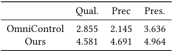
Recognized table text (check against the image)
| Qual. | Prec | Pres. | |
|---|---|---|---|
| OmniControl | 2.855 | 2.145 | 3.636 |
| Ours | 4.581 | 4.691 | 4.964 |
The results in Tab. 2 show that our method achieves excellent control precision, while faithfully preserving the source motion. Notice that the FID here is even lower than our results in Tab. 1. This is mainly because we sample spatial constraints from ground truth data, making the edited results more similar to real motion.
4.3 User Study
We further conduct a user study to validate the applicability of our proposed method in real scenarios. We asked 3 professional animators to keyframe the hip position and velocity of 9 different sequences as inputs. Additionally, 2 amateur users were asked to create 3 trajectories and keyframe them in relation to reference motions using a Blender add-on we provided. We then generated motion sequences using both our method and OmniControl. These sequences were further edited by manually imposing sparse spatial constraints. One example is shown in the 2nd row of Fig. 5. A total of 11 subjects were invited to rate the results on a scale from 1 to 5 based on three criteria: the quality of the generated motion (Qual.), the precision of the results to the spatial control (Prec.), and the preservation of the source motions in the edited sequences (Pres.).
The results in Tab. 3 demonstrate that our method works well with real user inputs, and outperforms the baseline across all evaluated criteria. Notably, we observed that OmniControl sometimes neglects sparse constraints when provided alongside dense control, whereas our method successfully accommodates both.

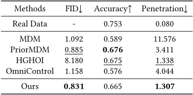
Recognized table text (check against the image)
| Methods | FID↓ | Accuracy↑ | Penetration↓ |
|---|---|---|---|
| Real Data | - | 0.753 | 0.080 |
| MDM | 1.092 | 0.589 | 11.576 |
| PriorMDM | 0.885 | 0.676 | 3.411 |
| HGHOI | 8.180 | 0.675 | 1.338 |
| OmniControl | 1.158 | 0.576 | 4.044 |
| Ours | 0.831 | 0.665 | 1.307 |
4.4 Direct Evaluation for Keyframes
To further validate the effectiveness of our approach for keyframe generation, we conduct an experiment that directly evaluates the quality of the generated keyframes from our method, without involving any additional modules, and compares them with the baselines. For MDM, PriorMDM, and OmniControl, we use the same heuristic method described earlier to select keyframes from the generated full motions. For HGHOI, we use milestones as the keyframes. We train a classifier for keyframe sequences in the same manner as for full motions to calculate FID and accuracy.
As shown in Tab. 4, our method achieves the best FID and penetration values, demonstrating the high quality and spatial coherence of the generated results. The recognition accuracy of our method is also comparable to that of the baseline methods.
4.5 Ablation Study
To validate the effectiveness of both our model design and control signals derived from the input trajectory, we conducted ablation studies involving several variants of our model. The visual results are shown in Fig. 6. Quantitative results shown in Tab. 5 indicate that our design choices significantly enhance performance. Particular attention should be given to the non-autoregressive version of our model. While we provide the same control signals for each frame as the base model, it fails to capture the interrelationships among keyframes due to varying keyframe timing patterns, resulting in a significant decline across all four metrics, especially in penetration and foot skate. This underscores the importance of our autoregressive scheme, which emphasizes adjacent keyframes. The results in the 3rd to 6th rows demonstrate that the control signals derived from the root trajectory further enhance the generation quality, as evidenced by improvements across all metrics in the other variants. The 7th row presents results from our model trained on randomly sampled frames, which exhibits declines in FID and recognition accuracy compared to our base model. This can be attributed to the fact that while both models generate high-fidelity keyframes, the base model benefits from the keyframe dataset and generates more expressive and distinct results instead of 'averaged' ones.

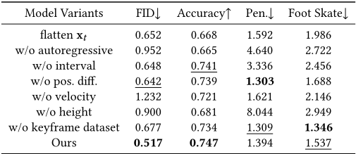
Recognized table text (check against the image)
| Model Variants | FID↓ | Accuracy↑ | Pen.↓ | Foot Skate↓ |
|---|---|---|---|---|
| flatten x𝑡 | 0.652 | 0.668 | 1.592 | 1.986 |
| w/o autoregressive | 0.952 | 0.665 | 4.640 | 2.722 |
| w/o interval | 0.648 | 0.741 | 3.336 | 2.456 |
| w/o pos. diff. | 0.642 | 0.739 | 1.303 | 1.688 |
| w/o velocity | 1.232 | 0.721 | 1.621 | 2.146 |
| w/o height | 0.900 | 0.681 | 8.044 | 2.949 |
| w/o keyframe dataset | 0.677 | 0.734 | 1.309 | 1.346 |
| Ours | 0.517 | 0.747 | 1.394 | 1.537 |
5 CONCLUSIONS, LIMITATIONS AND FUTUREWORKS
In this work, we introduced AutoKeyframe, a framework for motion generation and editing that minimizes manual input while maintaining precise control. Leveraging an autoregressive diffusion model, AutoKeyframe generates keyframes from 3D root trajectories with sparse user-defined postures, significantly reducing manual effort and enabling intuitive control. Flexible sparse spatial constraints are supported via a skeleton-based gradient guidance technique, which further facilitates easy keyframe editing. Experiments validate AutoKeyframe's ability to achieve high-quality motion synthesis with flexible control, advancing user-friendly animation pipelines. The capabilities of AutoKeyframe can be applied to various downstream applications, like integrating with industry-standard software (e.g. Maya and Blender) for interactive animation authoring.
Our autoregressive generation assumes human motion follows a continuous Markov process, where a character's pose depends only on recent motion. While effective for short-term dynamics, this assumption may falter in capturing long-term semantics, as global planning relies solely on input trajectories and keyframe timings, which can sometimes be insufficient. Incorporating global information into the autoregressive process may enhance the generation. Additionally, we expect users to specify keyframe timings and our model is able to generalize to diverse timing patterns. However, the automatic generation of keyframe timings that suit different motion styles remains a significant challenge, leaving considerable room for future work. Another promising direction for improvement is integrating motion phase manifolds [Starke et al. 2022], which could enhance the coordination between keyframes, particularly in subtle details like foot placement.
Acknowledgments
Xiaogang Jin was supported by the National Natural Science Foundation of China (Grant No. 62472373) and Key R&D Program of Zhejiang (Grant No. 2024C01069).
References
Kfir Aberman, Yijia Weng, Dani Lischinski, Daniel Cohen-Or, and Baoquan Chen. 2020. Unpaired Motion Style Transfer from Video to Animation. ACM Transactions on Graphics (TOG) 39, 4 (2020), 64.
Dhruv Agrawal, Jakob Buhmann, Dominik Borer, Robert W. Sumner, and Martin Guay. 2024. SKEL-Betweener: A Neural Motion Rig for Interactive Motion Authoring. ACM Transactions on Graphics 43, 6, Article 247 (Nov. 2024), 11 pages.
Okan Arikan and David A Forsyth. 2002. Interactive Motion Generation from Examples. ACM Transactions on Graphics 21, 3 (2002), 483-490.
Nikos Athanasiou, Alpár Cseke, Markos Diomataris, Michael J. Black, and Gül Varol. 2024. MotionFix: Text-Driven 3D Human Motion Editing. In SIGGRAPH Asia 2024 Conference Papers (SA '24). Association for Computing Machinery, New York, NY, USA, Article 44, 11 pages.
Zhi Cen, Huaijin Pi, Sida Peng, Zehong Shen, Minghui Yang, Zhu Shuai, Hujun Bao, and Xiaowei Zhou. 2024. Generating Human Motion in 3D Scenes from Text Descriptions. In CVPR. 1855-1866.
Jinxiang Chai and Jessica K. Hodgins. 2007. Constraint-based Motion Optimization using a Statistical Dynamic Model. ACM Transactions on Graphics 26, 3 (2007), 8-es.
Rui Chen, Mingyi Shi, Shaoli Huang, Ping Tan, Taku Komura, and Xuelin Chen. 2024. Taming Diffusion Probabilistic Models for Character Control. In ACM SIGGRAPH 2024 Conference Papers (Denver, CO, USA) (SIGGRAPH '24). Association for Computing Machinery, New York, NY, USA.
Xin Chen, Biao Jiang, Wen Liu, Zilong Huang, Bin Fu, Tao Chen, and Gang Yu. 2023. Executing your Commands via Motion Diffusion in Latent Space. In Proceedings of the IEEE/CVF Conference on Computer Vision and Pattern Recognition. 18000-18010.
Setareh Cohan, Guy Tevet, Daniele Reda, Xue Bin Peng, and Michiel van de Panne. 2024. Flexible Motion In-betweening with Diffusion Models. In ACM SIGGRAPH 2024 Conference Papers (Denver, CO, USA) (SIGGRAPH '24). Association for Computing Machinery, New York, NY, USA, Article 69, 9 pages.
Wenxun Dai, Ling-Hao Chen, Jingbo Wang, Jinpeng Liu, Bo Dai, and Yansong Tang. 2024. MotionLCM: Real-Time Controllable Motion Generation via Latent Consistency Model. In Computer Vision - ECCV 2024: 18th European Conference, Milan, Italy, September 29-October 4, 2024, Proceedings, Part XVI (Milan, Italy). Springer-Verlag, Berlin, Heidelberg, 390-408.
Michael Gleicher. 1997. Motion Editing with Spacetime Constraints. In Proceedings of the 1997 Symposium on Interactive 3D Graphics (Providence, Rhode Island, USA) (I3D '97). Association for Computing Machinery, New York, NY, USA, 139-ff.
Purvi Goel, Kuan-Chieh Wang, C. Karen Liu, and Kayvon Fatahalian. 2024. Iterative Motion Editing with Natural Language. In ACM SIGGRAPH 2024 Conference Papers (Denver, CO, USA) (SIGGRAPH '24). Association for Computing Machinery, New York, NY, USA, Article 71, 9 pages.
Chuan Guo, Shihao Zou, Xinxin Zuo, Sen Wang, Wei Ji, Xingyu Li, and Li Cheng. 2022. Generating Diverse and Natural 3D Human Motions From Text. In Proceedings of the IEEE/CVF Conference on Computer Vision and Pattern Recognition (CVPR). 5152-5161.
Chuan Guo, Xinxin Zuo, Sen Wang, Shihao Zou, Qingyao Sun, Annan Deng, Minglun Gong, and Li Cheng. 2020. Action2motion: Conditioned Generation of 3D Human Motions. In Proceedings of the 28th ACM International Conference on Multimedia. 2021-2029.
Félix G Harvey, Mike Yurick, Derek Nowrouzezahrai, and Christopher Pal. 2020. Robust Motion In-betweening. ACM Transactions on Graphics (TOG) 39, 4 (2020), 60-1.
Hado van Hasselt, Arthur Guez, and David Silver. 2016. Deep Reinforcement Learning with Double Q-Learning. In Proceedings of the Thirtieth AAAI Conference on Artificial Intelligence (Phoenix, Arizona) (AAAI'16). AAAI Press, 2094-2100.
Seokhyeon Hong, Haemin Kim, Kyungmin Cho, and Junyong Noh. 2024. Long-Term Motion In-Betweening via Keyframe Prediction. In Proceedings of the ACM SIGGRAPH/Eurographics Symposium on Computer Animation (SCA) (Montreal, Quebec, Canada) (SCA '24). Eurographics Association, Goslar, DEU, 1-12.
Yanli Ji, Feixiang Xu, Yang Yang, Fumin Shen, Heng Tao Shen, and Wei-Shi Zheng. 2018. A Large-scale RGB-D Database for Arbitrary-view Human Action Recognition. In Proceedings of the 26th ACM International Conference on Multimedia (Seoul, Republic of Korea) (MM '18). Association for Computing Machinery, New York, NY, USA, 1510-1518.
Biao Jiang, Xin Chen, Wen Liu, Jingyi Yu, Gang Yu, and Tao Chen. 2023. Motiongpt: Human Motion as a Foreign Language. Advances in Neural Information Processing Systems 36 (2023), 20067-20079.
Korrawe Karunratanakul, Konpat Preechakul, Supasorn Suwajanakorn, and Siyu Tang. 2023. Guided Motion Diffusion for Controllable Human Motion Synthesis. In Proceedings of the IEEE/CVF International Conference on Computer Vision. 21512162.
Lucas Kovar, Michael Gleicher, and Frédéric Pighin. 2002. Motion Graphs. ACM Transactions on Graphics 21, 3 (July 2002), 473-482.
Jehee Lee, Jinxiang Chai, Paul S. A. Reitsma, Jessica K. Hodgins, and Nancy S. Pollard. 2002. Interactive Control of Avatars Animated with Human Motion Data. ACM Transactions on Graphics 21, 3 (July 2002), 491-500.
Jehee Lee and Sung Yong Shin. 1999. A Hierarchical Approach to Interactive Motion Editing for Human-like Figures. In Proceedings of the 26th Annual Conference on Computer Graphics and Interactive Techniques (SIGGRAPH '99). ACM Press/AddisonWesley Publishing Co., USA, 39-48.
Clinton Mo, Kun Hu, Shaohui Mei, Zebin Chen, and Zhiyong Wang. 2021. Keyframe Extraction from Motion Capture Sequences with Graph based Deep Reinforcement Learning. In Proceedings of the 29th ACM International Conference on Multimedia (Virtual Event, China) (MM '21). Association for Computing Machinery, New York, NY, USA, 5194-5202.
Mathis Petrovich, Michael J Black, and Gül Varol. 2021. Action-conditioned 3D Human Motion Synthesis with Transformer VAE. In Proceedings of the IEEE/CVF International Conference on Computer Vision. 10985-10995.
Mathis Petrovich, Michael J Black, and Gül Varol. 2022. TEMOS: Generating Diverse Human Motions from Textual Descriptions. In European Conference on Computer Vision. Springer, 480-497.
Huaijin Pi, Sida Peng, Minghui Yang, Xiaowei Zhou, and Hujun Bao. 2023. Hierarchical Generation of Human-Object Interactions with Diffusion Probabilistic Models. In Proceedings of the IEEE/CVF International Conference on Computer Vision (ICCV). 15061-15073.
Jia Qin, Youyi Zheng, and Kun Zhou. 2022. Motion In-Betweening via Two-Stage Transformers. ACM Transactions on Graphics 41, 6 (2022), 184-1.
Richard Roberts, J. P. Lewis, Ken Anjyo, Jaewoo Seo, and Yeongho Seol. 2018. Optimal and Interactive Keyframe Selection for Motion Capture. In SIGGRAPH Asia 2018 Technical Briefs (Tokyo, Japan) (SA '18). Association for Computing Machinery, New York, NY, USA, Article 26, 4 pages.
Yoni Shafir, Guy Tevet, Roy Kapon, and Amit Haim Bermano. 2024. Human Motion Diffusion as a Generative Prior. In The Twelfth International Conference on Learning Representations (ICLR).
Amir Shahroudy, Jun Liu, Tian-Tsong Ng, and Gang Wang. 2016. Ntu RGB+ D: A Large Scale Dataset for 3D Human Activity Analysis. In Proceedings of the IEEE Conference on Computer Vision and Pattern Recognition. 1010-1019.
Wenfeng Song, Xingliang Jin, Shuai Li, Chenglizhao Chen, Aimin Hao, Xia Hou, Ning Li, and Hong Qin. 2024. Arbitrary Motion Style Transfer with Multi-Condition Motion Latent Diffusion Model. In 2024 IEEE/CVF Conference on Computer Vision and Pattern Recognition (CVPR). 821-830.
Paul Starke, Sebastian Starke, Taku Komura, and Frank Steinicke. 2023. Motion InBetweening with Phase Manifolds. Proceedings of the ACM on Computer Graphics and Interactive Techniques 6, 3, Article 37 (Aug. 2023), 17 pages.
Sebastian Starke, Ian Mason, and Taku Komura. 2022. DeepPhase: Periodic Autoencoders for Learning Motion Phase Manifolds. ACM Transactions on Graphics 41, 4, Article 136 (July 2022), 13 pages.
Justin Studer, Dhruv Agrawal, Dominik Borer, Seyedmorteza Sadat, Robert W. Sumner, Martin Guay, and Jakob Buhmann. 2024. Factorized Motion Diffusion for Precise and Character-Agnostic Motion Inbetweening. In Proceedings of the 17th ACM SIGGRAPH Conference on Motion, Interaction, and Games (Arlington, VA, USA) (MIG '24). Association for Computing Machinery, New York, NY, USA, Article 11, 10 pages.
Xiangjun Tang, He Wang, Bo Hu, Xu Gong, Ruifan Yi, Qilong Kou, and Xiaogang Jin. 2022. Real-time Controllable Motion Transition for Characters. ACM Transactions on Graphics 41, 4, Article 137 (July 2022), 10 pages.
Guy Tevet, Sigal Raab, Brian Gordon, Yoni Shafir, Daniel Cohen-or, and Amit Haim Bermano. 2023. Human Motion Diffusion Model. In The Eleventh International Conference on Learning Representations (ICLR).
Weilin Wan, Zhiyang Dou, Taku Komura, Wenping Wang, Dinesh Jayaraman, and Lingjie Liu. 2024. TLControl: Trajectory and Language Control for Human Motion Synthesis. Springer-Verlag, Berlin, Heidelberg, 37-54.
He Wang, Edmond S.L. Ho, and Taku Komura. 2015. An Energy-Driven Motion Planning Method for Two Distant Postures. IEEE Transactions on Visualization and Computer Graphics 21, 1 (2015), 18-30.
Zan Wang, Yixin Chen, Baoxiong Jia, Puhao Li, Jinlu Zhang, Jingze Zhang, Tengyu Liu, Yixin Zhu, Wei Liang, and Siyuan Huang. 2024. Move as You Say, Interact as You Can: Language-guided Human Motion Generation with Scene Affordance. In Proceedings of the IEEE/CVF Conference on Computer Vision and Pattern Recognition (CVPR). 433-444.
Yiming Xie, Varun Jampani, Lei Zhong, Deqing Sun, and Huaizu Jiang. 2024. OmniControl: Control Any Joint at Any Time for Human Motion Generation. In The Twelfth International Conference on Learning Representations.
Hongwei Yi, Justus Thies, Michael J. Black, Xue Bin Peng, and Davis Rempe. 2025. Generating Human Interaction Motions in Scenes with Text Control. In European Conference on Computer Vision (ECCV). 246-263.
Jianrong Zhang, Yangsong Zhang, Xiaodong Cun, Shaoli Huang, Yong Zhang, Hongwei Zhao, Hongtao Lu, and Xi Shen. 2023d. T2M-GPT: Generating Human Motion from Textual Descriptions with Discrete Representations. In Proceedings of the IEEE/CVF Conference on Computer Vision and Pattern Recognition (CVPR). 14730-14740.
Lvmin Zhang, Anyi Rao, and Maneesh Agrawala. 2023c. Adding Conditional Control to Text-to-Image Diffusion Models. In Proceedings of the IEEE/CVF International Conference on Computer Vision (ICCV). 3836-3847.
Mingyuan Zhang, Zhongang Cai, Liang Pan, Fangzhou Hong, Xinying Guo, Lei Yang, and Ziwei Liu. 2024. Motiondiffuse: Text-driven Human Motion Generation with Diffusion Model. IEEE Transactions on Pattern Analysis and Machine Intelligence (2024).
Mingyuan Zhang, Xinying Guo, Liang Pan, Zhongang Cai, Fangzhou Hong, Huirong Li, Lei Yang, and Ziwei Liu. 2023a. ReMoDiffuse: Retrieval-Augmented Motion Diffusion Model . In 2023 IEEE/CVF International Conference on Computer Vision (ICCV). Los Alamitos, CA, USA, 364-373.
10 · Bowen Zheng, Ke Chen, Yuxin Yao, Zijiao Zeng, Xinwei Jiang, He Wang, Joan Lasenby, and Xiaogang Jin
Mingyuan Zhang, Huirong Li, Zhongang Cai, Jiawei Ren, Lei Yang, and Ziwei Liu. 2023b. Finemogen: Fine-grained Spatio-temporal Motion Generation and Editing. Advances in Neural Information Processing Systems 36 (2023), 13981-13992.
Yi Zhou, Connelly Barnes, Lu Jingwan, Yang Jimei, and Li Hao. 2019. On the Continuity of Rotation Representations in Neural Networks. In The IEEE Conference on Computer Vision and Pattern Recognition (CVPR). 5745-5753.
![Fig. 6. Visual comparison of the ablation study. The action label of this example is fight. We make some of the transition frames transparent for clearer demonstration. Our full model generates a keyframe sequence with a dynamic and expressive punch. We present qualitative results comparing the nonautoregressive version of our model, our model without the height control signal, our model without the velocity control signal, and our model trained without our keyframe dataset against our full model.](assets/0176-picture.png)

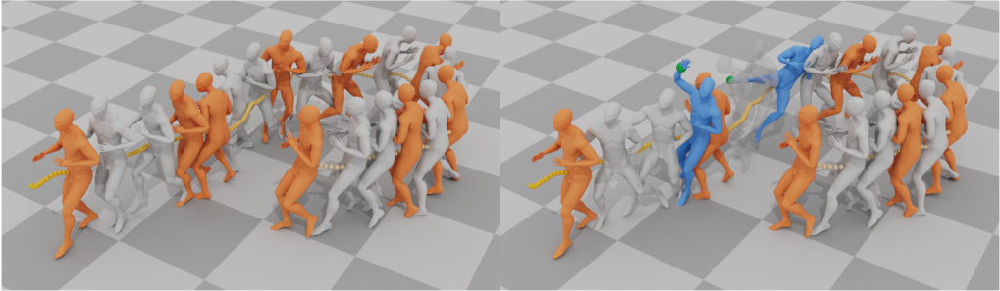

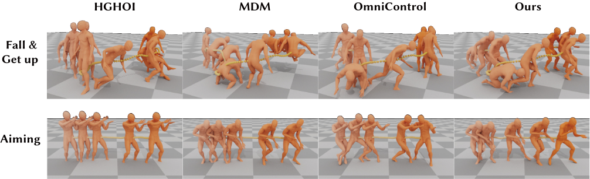